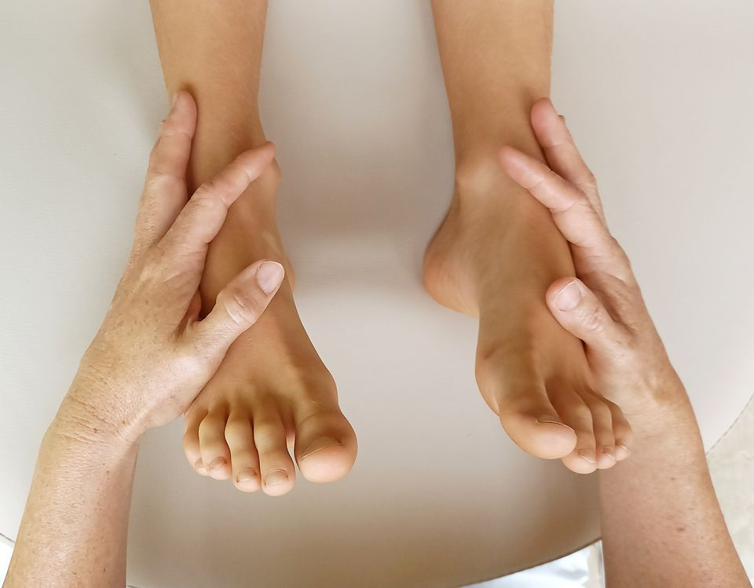
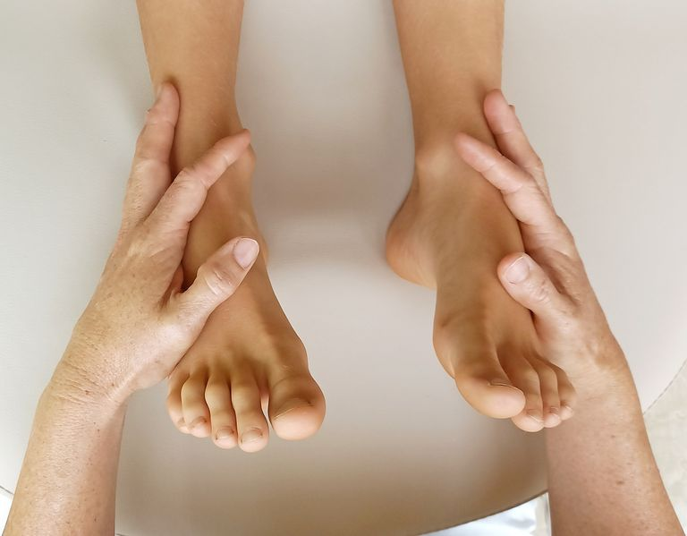

Jeder Schmerz, jede körperliche oder emotionale Blockade hat eine Ursache. Wichtig ist es, diese nicht isoliert zu betrachten und zu behandeln – denn der Mensch ist eine Einheit aus Körper, Seele und Geist. Mir ist es wichtig, allen drei Aspekten in meinen Behandlungen Aufmerksamkeit zu schenken und Sie ganzheitlich zu unterstützen.
Ich begleite Erwachsene und Kinder jeden Alters.
Eine manuelle Therapie, die sich aus der Osteopathie entwickelt hat. Mit sanften Berührungen werden körperliche Schmerzen, Verspannungen und Blockaden gelöst – für mehr Wohlbefinden und eine tiefgreifende Entspannung des gesamten Organismus.
Bewusstes Atmen, geführte Meditationen, Progressive Muskelentspannung nach Jacobson und Autogenes Training führen zu einer tiefen Entspannung, wirken sich positiv auf den Heilungsprozess aus und tragen zur individuellen Stressbewältigung bei.
Angepasst an Ihre persönliche Situation verwende ich Heilmittel und Verfahren aus verschiedenen naturheilkundlichen Richtungen. Ich biete Einzeltherapiestunden, aber auch therapeutische Gruppenstunden für Qi-Gong, Autogenes Training oder Progressive Muskelentspannung an.


Sie haben Interesse oder weitere Fragen? Unter der Telefonnummer 0178-5233494 bin ich gerne für Sie da.
Kontakt aufnehmen